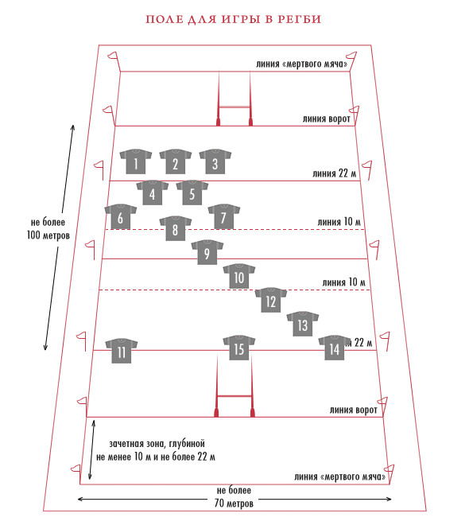
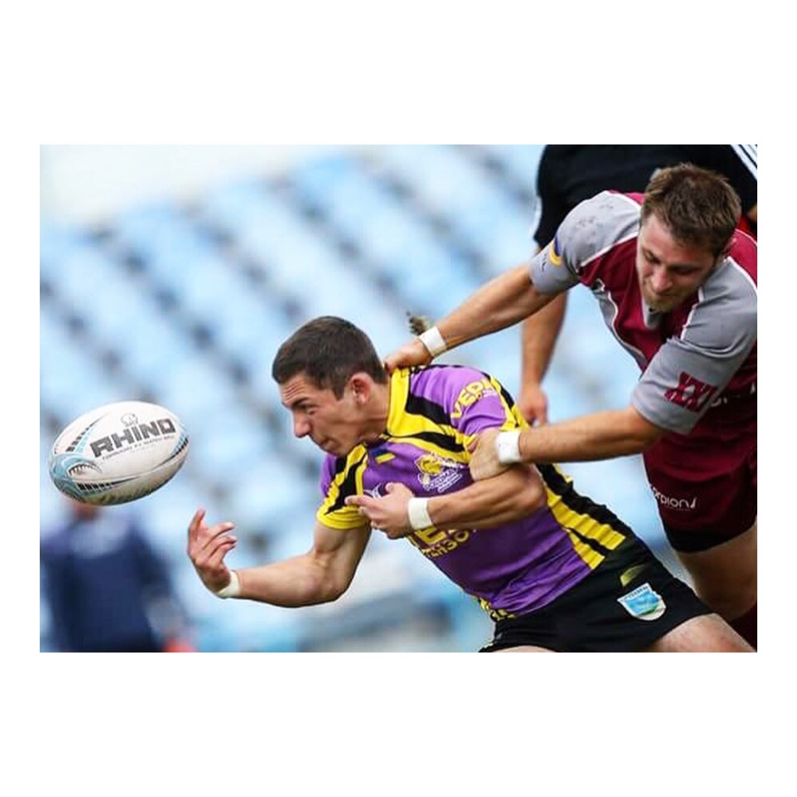
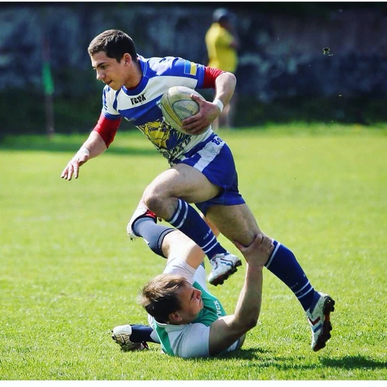

Регбі
Реґбі (англ. rugby football) — олімпійський вид спорту, спортивна командна гра, в яку грають на прямокутному полі м'ячем овальної форми, різновид футболу.
Правила гри
Мета гри
Метою гри є приземлення м'яча у заліковому полі (місті) або ж забиття його ногою над перекладиною воріт у межах, позначених двома стійками.
Основи
У реґбі грають руками й ногами. При грі руками заборонено передавати м'яч вперед. Ногами м'яч бити вперед можна. Гравець, який перебуває перед лінією м'яча вважається поза грою й не може брати в ній участі. Гравцю, який лежить на землі, теж заборонено брати участь у грі. Повалений на землю гравець зобов'язаний якомога швидше випустити м'яч із рук. Просування гравця з м'ячем можна зупинити, схопивши його двома руками й поваливши на землю. Заборонено захоплювати гравця за шию чи однією рукою. Заборонені підніжки. При виході м'яча з гри за бічну лінію його вкидають у коридор, який формується із гравців обох команд. При грі вперед та інших дрібних порушеннях у основному виді регбі (регбі-15) призначається сутичка, в якій м'яч вкидається між двома групами із восьми гравців, і ті намагаються вибороти його, відштовхуючи групу супротивника. При серйозніших порушеннях (наприклад, офсайді) призначаються карні удари. Особливо груба гра карається вилученням на десять хвилин (жовта картка) чи з гри (червона картка). У найпоширенішому варіанті (регбі-15) гра складається із двох таймів тривалістю 40 хвилин кожен. Проте, після того, як час тайму вибіг, боротьба не припиняється, доки м'яч не вийде з гри.
Залікові очки
В основному виді регбі (регбі-15, регбі-юніон) за приземлення м'яча в місті супротивника дається 5 очок й право на спробу реалізації. При успішній реалізації дається ще два очки. За влучне пробиття карного удару дається 3 очки. Те ж саме стосується влучного удару з відскоку від землі (дроп-голу). У регбі-13 за приземлення м'яча в заліковому полі команда отримує 4 очки і право на спробу реалізації. За успішну реалізацію команда отримує ще два очки.
Позиції гравців
Регбійна команда складається з 15 гравців. На відміну від футболу номери на формі гравців стартового складу завжди відповідають ролі, яку гравець виконує на полі. Для кожної позиції вибираються виконавці, які відповідають їй за будовою тіла, фізичними даними й характером.
Назви позицій
- Гравці сутички
- лівий стовп
- хукер
- правий стовп
- лівий замок
- правий замок
- лівий фланкер
- правий фланкер
- номер 8
- Гравці задньої лінії
- півзахисник
- флай-хав
- ліве крило
- внутрішній центр
- зовнішній центр
- праве крило
- захисник
Регбійний словничок
Регбі-15 гра, в якій між гравцями команд-супротивників доволі часто відбувається фізичний контакт, в якому задача гравців полягає в тому, щоб відтіснити гравців іншої команди від м'яча. Ці ситуації називаються сутичками, раками і молами.
Сутичка — стандартна ситуація, в якій беруть участь по 8 гравців від кожної команди, розташованих у три лінії. В центрі першої лінії стоїть гак, повиснувши на плечах двох стовпів. В другій лінії — два замки, дужі гравці, що створюють основний тиск, в третій лінії — два фланкери і номер 8. М'яч у сутичку вводить півзахисник сутички, скрам-хав, він же підбирає його тоді, коли той викочується за межі сутички. Вибороти м'яч і відкинути його назад ногою — задача гака. Команда, яка вводить м'яч у сутичку здебільшого має перевагу і здобуває його.
Інша ситуація, рак (англ. ruck), утворюється стихійно, коли гравця з м'ячем валять на землю. Упавши на землю, він повинен випустити м'яч із рук, однак робить це, зазвичай дещо назад. Для того, щоб команда зберегла м'яч в цей момент, партнери повинні вибудувати стіну між м'ячем та супротивником. При цьому принаймні один гравець команди утворює контакт із гравцем супротивника і намагається відтіснити його. Супротивник теж тисне — підібрати м'яч за правилами можна лише тоді, коли він опиниться за стіною із свого боку. Інші гравці теж можуть приєднуватися до раку, але робити це вони можуть тільки ззаду свого гравця, який вступив у контакт. Гравці в раку повинні стояти на ногах. У випадку падіння вони повинні якомога скоріше відкотитися. При утворенні раку всі гравці, що не беруть в ньому участі, повинні вийти з положення офсайду. Гравці в раку не мають права торкатися м'яча руками. М'яч із раку підбирає зазвичай скрам-хав, хоча це не обов'язково.
Ситуація мол виникає тоді, коли утворюється контакт між гравцем і гравцем супротивника, однак вони обидва стоять на ногах і гравець із м'ячем продовжує просуватися вперед, давлячи своєю масою. До молу можуть приєднуватися інші гравці, але тільки ззаду від того гравця своєї команди, який започаткував мол. Мол може бути дуже ефективним для значного просування вперед, оскільки значна кількість гравців чинять тиск на супротивника.
Якщо м'яч залишив поле через бокову лінію, то він повертається у гру частіше всього через коридор. При цьому гравці обох команд розташовуються у колонах поперек поля на відстані одного метра від суперника та від 5 до 15 метрів від боковою лінії. М'яч вкидається точно між гравцями. Для того, щоб впевнено заволодіти м'ячем, двоє гравців в коридорі піднімають третього в момент, коли той стрибає. Такий прийом називається ліфт
Інформація була отримана з сайту Вікіпедія
Моя команда
Вперше познайомився з цим видом спорту у 2013 році у м. Ірпінь, де навчився і грав у одноіменному клубі до 2018р.
Починаючи з 2018 року виступаю за клуб "Політехнік" Київ, з яким регулярно займаємо призові місця у Чемпіонаті та Кубку України з регбі
